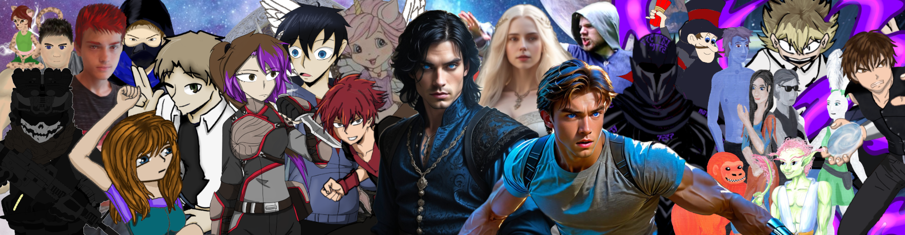
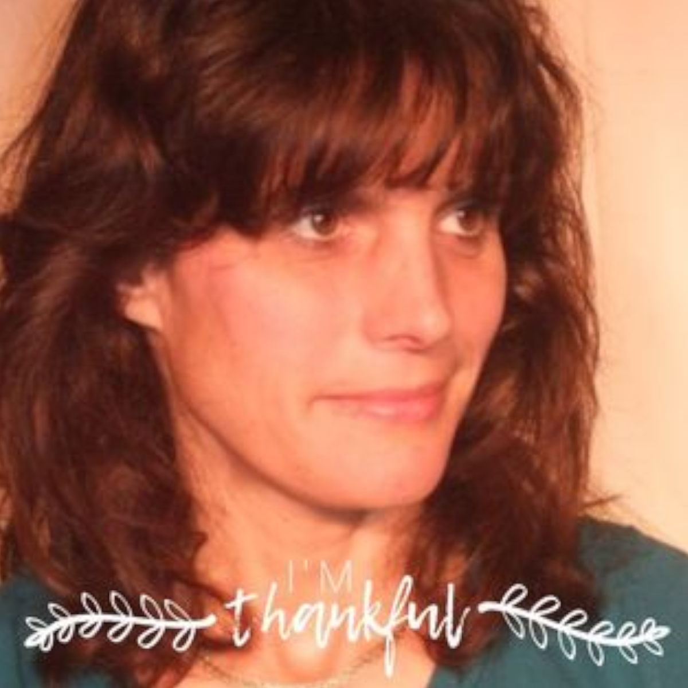
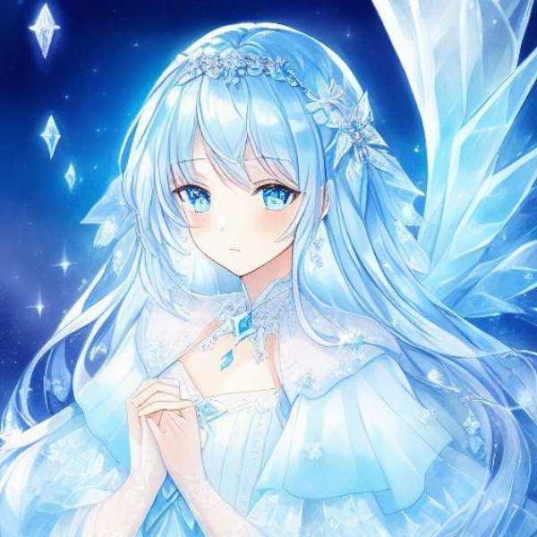
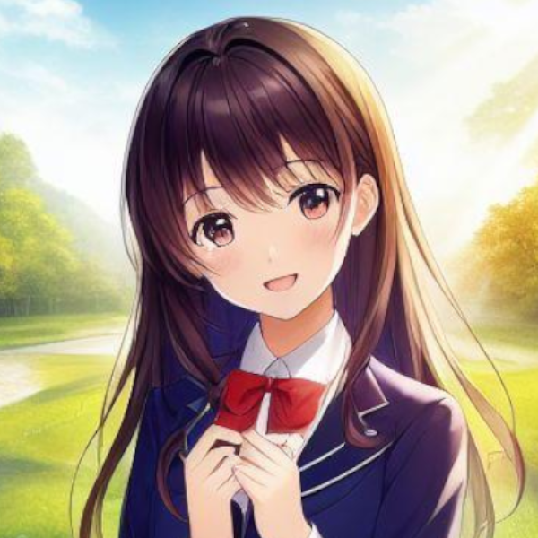
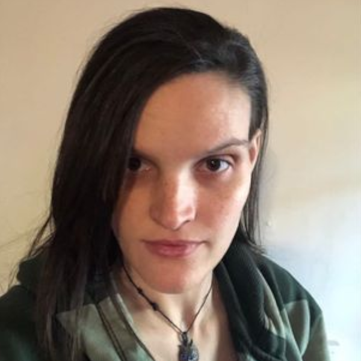
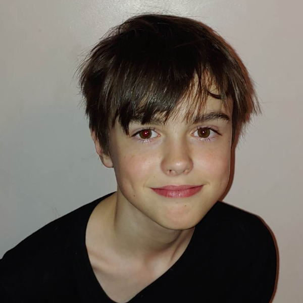
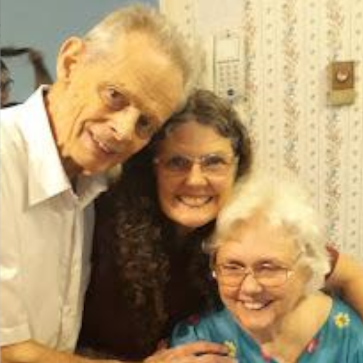

About Us

Who are we at DeBokton Book?
DeBokton Book is a family business, or even more, a family hobby. We write together, read together, and create worlds and characters together. We want our stories to inspire people to be more. Our motto is "Find your hero within!" We hope you can find good role models in the heroes in our books, and we hope our books help inspire the hero in you. Yet, we are never preachy. Our stories are creative and very true to their worlds and characters. You won't find contrived plot devices here.
Two questions you might ask: First, why DeBokton? What's that mean? DeBokton is a family name from our ancestors. The name Greene is rather generic and sounds as if it should be attached to an environmental company, not a book company. Second, why the phoenix logo? The phoenix represents rebirth. It symbolizes coming up from the ashes and being reborn. At DeBokton, we realize that a hero is someone who overcomes and rises up when all looks hopeless, so the symbol is fitting. Also, the name Renee, who is the main author, means reborn, which the phoenix symbolizes well.

Renee Greene
Main Author
Hi! I’m Renee. I’m a happily married mother of seven, so my life is pretty normal… Well… Maybe not.
I grew up around the theater, which would explain why there are actors and performers in so many books of mine. I ran Showtime Performers, a local drama group that did original musical theater productions for twenty years. I developed the stories, directed, choreographed, and even composed music for many of the shows. Dancing used to be a passion of mine. I taught drama for eight years. I also was a professional performer at the Carolina Renaissance Festival for four or five seasons. For a short while, I was part of a performance group that I learned Fire Poi for. I love fire arts, which is why several of the characters in my books do them as hobbies. Most people in my family do some fire art.
Mostly I have been a stay at home mom, but I did work a few years teaching high school and a few years teaching college.
I have a master’s degree in mathematics. This may explain my interest in the technical side of my writing. Yes, I enjoy studying wormholes, other dimensions, and game theory, which is why at times they show up in books. I have a particular interest in combinatorics, which doesn’t really show up in my books. Despite being good at math, I’m not that great at science, so I often get help from my husband, Doug, and son, Michael, to figure out accurate physics or things like what a planet orbiting a red dwarf is like.
I am a Christian and very active in my church. Hopefully that shows in my writing. The Seeker series is a religious allegory, although most of my books aren’t. I never intend to preach in a book. Yet, my values are always underlying in stories. I believe that heroes in stories should be good role models and true heroes. You will never find a book of mine that glamorizes immorality or encourages bad behaviors.
I began writing almost twenty years ago. I homeschool my children, and I wanted to do a unit on short stories, so I decided to write a short story so I would know what to teach them. Forty pages into it, I realized it was not going to be short. Pretty soon my husband and children were all asking what I was typing and began reading it. It got to the point where they would cook dinner so I could type, clean so I could type, or do whatever they could so I could type. I came home once to a note on the front door that said, “Mom, type!” I had a great amount to learn as a writer and sought advice from everyone I could. It took several years to polish my first books, but the short story turned into the Heroes Trilogy.
Writing has been a fun activity for my family. I type and we read what I have typed as a family at night. Often, my family plays an active role in the development of the stories. The Eubos System Trilogy was developed by having everyone create a character and discuss what their character would do. I would give the situation and then sit back, listen, and take notes, telling what the villain did. It wasn’t role played like D&D. I love D&D. I used to play, but their adventures don’t usually write as well as stories. Here, the players gave input, I’d write a few chapters, tell them what happened, and then see what they did next, always allowing myself the liberty to change anything as the author to keep integrity in the story. The FaeBorn series was my daughter, Heather’s, idea, but she had each of us develop different cities and the war mage teams for them. The Crown Series also had different family members create the different kingdoms. My children, particularly Heather and Daniel, are responsible for the ideas of many of my books. Michael comes up with interesting ideas too and is wrote the Woodcreek Academy Series. I love writing. I do it for fun. I’d love to spread reading as a family to many families, as it’s a great bonding activity. I try to write books that all ages can enjoy, making sure that any more adult topics are written such that they will be appropriate for younger family members to read or hear.
So, that’s me in a nutshell. In the back of each book, I put a prompt to message me with. Feel free to. I’d love to hear from you.
Michael
Author
Hi, I’m Michael. I wrote my first book when I was thirteen. Well, I wrote three and a half. And a blog when I was twelve. You might think I love writing, but you would be wrong. Originally, writing was my least favorite subject, along with reading.
So you might ask, ‘Then how did you get into writing?’ Well, my mom saw that I didn’t learn much from books and essays, (I’m home-schooled by the way), so she tried getting me to write a blog. It worked, I liked writing it, so I started learning how to write. But eventually, we ran out of things to say in my blog.
I also came up with a story idea. I tried to get mom to write it. (Mom writes books too). It was for a school for monsters, where a human kid comes into the school. Mom told me I should write it. This was actually the second time mom told me to write a story idea I came up with.
I came up with a story we decided to call Ling’s Bane. But I never made it to chapter twenty. So I was sure Woodcreek was going to fail. So mom told me to try to write to a younger audience.
So far, I’ve written six books in the series, four of which are illustrated, and three of which have been published. Oh, and I also did a book as my Eagle Project for my Eagle Scout. I also helped mom with some of her books. I never actually gave her a story idea she didn’t tell me to write, (well, until now: She’s writing a novel that I came up with the idea for), but I did come up with three characters in Eubos: Fangs, Derek, and Tim. I also came up with the city of Alfir from Faeborn. And I gave my brother the idea of A-OP, who gave the idea to mom.
So, what do I do besides write? I like science, math, porcupines (I got that from my blog), dragons, fire staff (My mom worked at renfair), and the science of fantasy. Like how werewolves would work with actual science. Hint, they’re a virus, but they don’t work that way in Woodcreek.
Okay, I’m done. You can stop reading now. I mean it! Stop! My books are more interesting things to read than this. You should read my book. So stop reading this! STOP!!!

Tamia Gordon
Illustrator, Author
Hi. I’m Tamia, the primary illustrator for DeBokton Books. I have been passionate about art all my life, but a series of misfortunes prevented my pursuing it for most of my adult life. I am very happy to be a part of DeBokton Books. I also wrote the children's book Unicorn Whistle. I have several children and grandchildren. I am also a massage therapist and certified crystal healer.

Heather Preston
Author
Heather is a happily married mother of three girls and one boy. She grew up around theater, loves crafts, sews incredibly well, and majored in technical theater. She performed at RenFaire and was part of Showtime Performers. Heather is the author of The Misfit Knights Series, which she hopes to finish, if she can get the time without a child needing her attention. She also writes children's stories and has done some illustrations.
Heather has been the inspiration for many of the novels, as she is excellent at coming up with ideas and world building. She's been a driving force for the family doing books together.

Julia Greene
Author
Julia is a happily married mother of three boys and one girl. She has little time to write, so her contributions mostly come in the form of Children's bedtime stories and consulting on mythology and history.
She grew up around the theater, mostly Showtime Performers, performed at the Renaissance Festival, did gymnastics for over fifteen years, and was a college cheerleader. She earned her bachelor's degree in English, with an emphasis on creative writing and Norse mythology.

Joseph
Illustrator, Contributor
Hi! I’m Joseph I am an illustrator for deBokton books. I have been a cover art consultant for my mom for years. I illustrated my first book, Nutty Putty Guy, when I was still ten. I went for the cartoonish big heads, arms, and hands to give the art the look of being drawn by a child. Since then, I've illustrated Kid's Secret to Happiness and The Teeny Tiny Amargasaurus. I also did the cover art for the Power Force Prep series, Cursed Sleep, and Crystal Snow and the Seven Geeks.
Besides art, I enjoy drama, Sonic the Hedgehog, and playing with friends. I’m the youngest of seven children. I have three older sisters and three older brothers.
Daniel
Web programmer, Co-Author
Hi. I'm Daniel. I'm a creative consultant more than an author. I have a passion for story-telling and world building, which has kept me intricately involved in the writing group. I have inpired multiple stories.
I am a computer programmer who loves TTRPGs. I've also worked part-time teaching drama, and grew up around the theater. I like to spend my free time either chatting with friends about cool things or learning cool things, seriously cool things.
Where I don't have my name on books, I am behind the scenes on most of what goes on in DeBokton Book.
Douglas Greene
Editor, Business Administrator
Hi! I'm Doug. I'm Renee's husband. I'm the main reader of the books, as we read out loud as stories are written. I also do whatever is needed, whether it's editing, fixing computers, or playing characters in books like Eubos. When Renee is busy typing, I make dinner or whatever else is needed.
I work in IT doing computer networks for my day job. I also enjoy spinning fire staff and wood-carving. At least, I would if I could find the time.
Ryan
Contributor
I'm Ryan. Don't expect me to say too much about myself. I'm the strong silent type. I'm really helpful at remembering names and details others forget. I'm a great deal like Fenyx in Rejected. I make things happen and get a great deal done, but am often in the background.

Harry Roy, Judy Roy, Rebecca Wilde
Authors/Illustrator
Harry wrote Johnny J. Jackson and the Jellybean Jar. He used to tell that story to his children when they were young, along with other stories. He was incredibly creative. He also directed plays, worked with youth at church, worked with cub scouts, and was an electrical engineer. He passed away in 2022 and is greatly missed.
Judy is Harry's wife. They have four children. Judy loves history and geneology. She wrote I Wonder.
Rebecca illustrated both Johnny J. Jackson and the Jellybean Jar. and I Wonder. She is an artist, mother of eight, great cook, and mother to anyone in need.